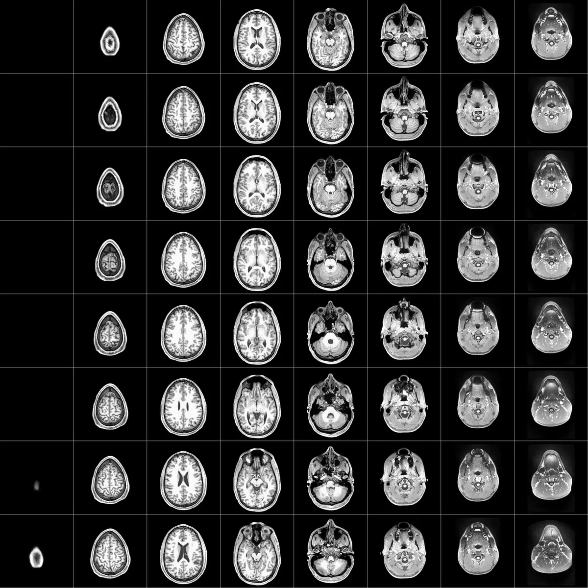
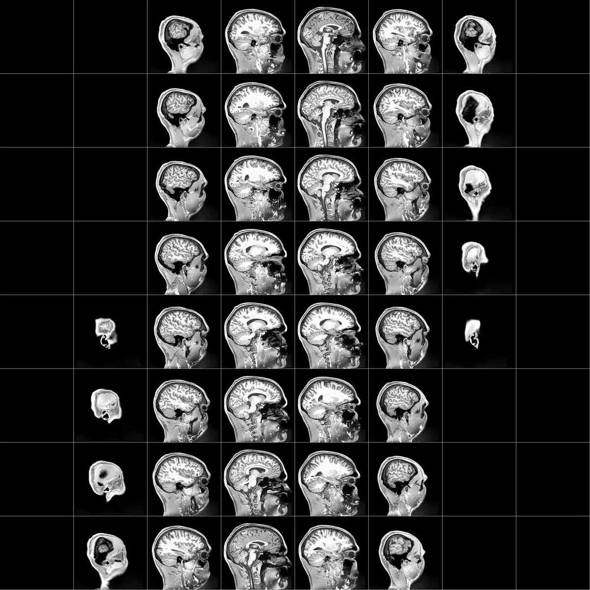
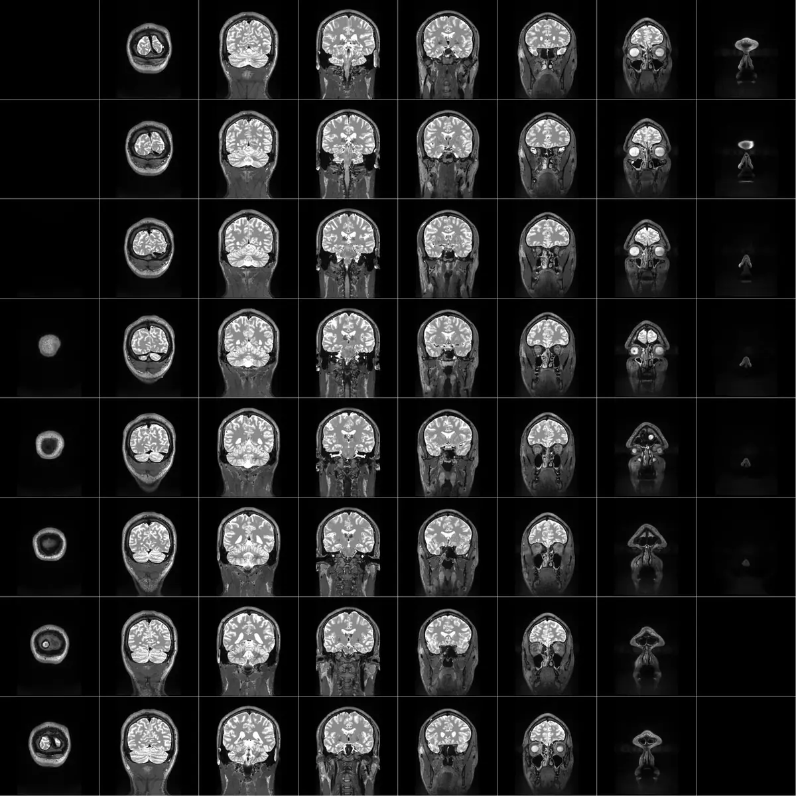
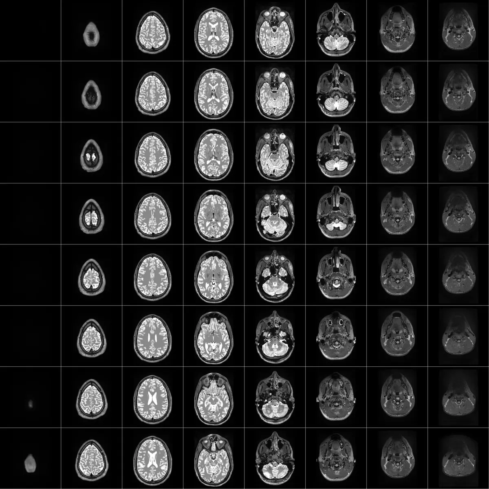
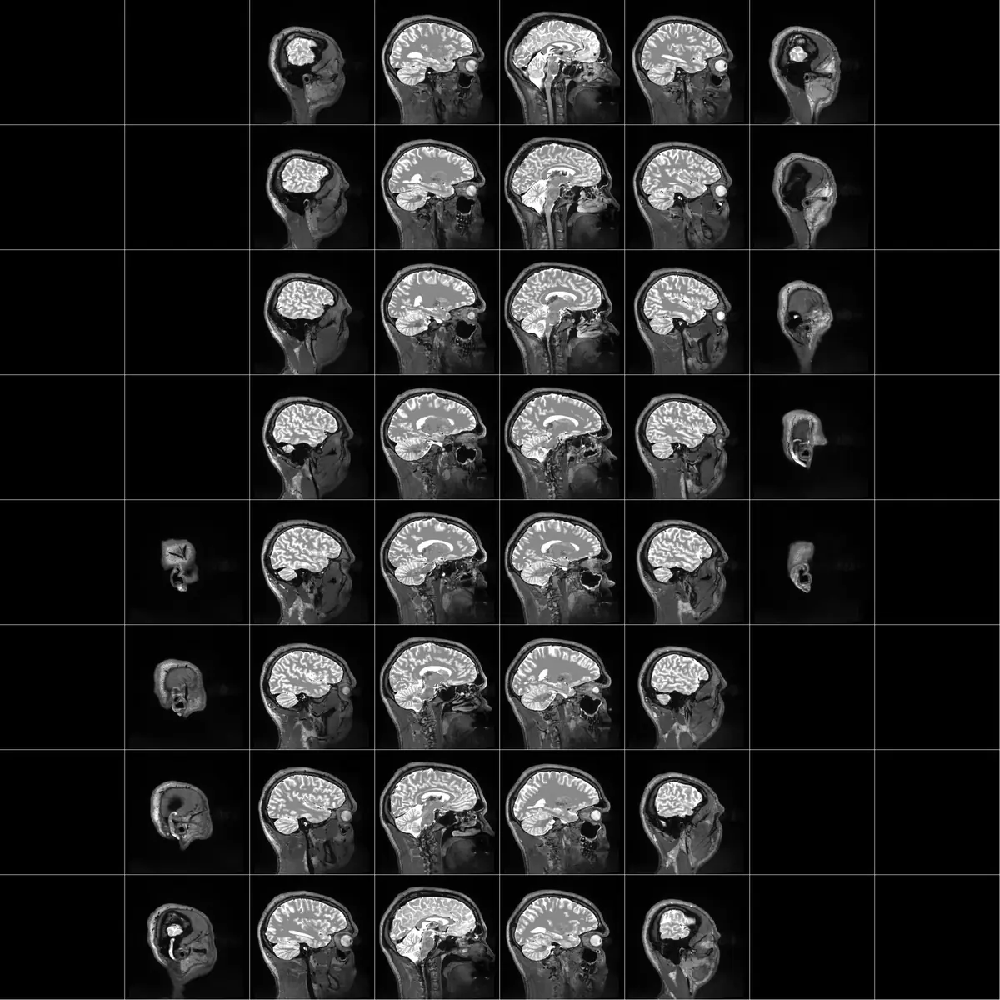

Structural MRI scans of my own brain. T1-weighted images show anatomy with good grey/white matter contrast; T2-weighted images make cerebrospinal fluid appear bright.






Surface reconstruction
A rotating 3D reconstruction of my cortical surface, generated with FreeSurfer from the T1-weighted scans above.